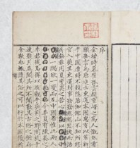
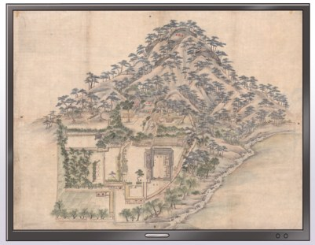

실학사상의 발달과 세도정치기 농민 봉기
양란 이후 농촌 양극화와 성리학적 공리공담의 한계를 타개하려 17세기부터 19세기 중반까지 시간순으로 발전한 중농학파(경세치용)·중상학파(이용후생·북학)·정약용·최한기의 실학 계보와, 17세기에서 19세기에 걸쳐 일방향으로 집대성된 의학·국학·지리·백과사전·과학의 성취, 그리고 1800년 정조 승하 이후 60여 년간 이어진 외척 세도정치와 삼정의 문란이 홍경래의 난(1811년)·임술 농민 봉기(1862년)·서학·동학의 확산으로 폭발하는 역사적 인과관계를 입체적으로 규명합니다.
1. 실학 사상의 두 갈래: 17세기부터 19세기 중반까지 중농·중상학파와 기학의 계보
앞선 제1장과 제2장에서 살펴본 바와 같이 임진왜란과 병자호란 양란 이후 농토가 황폐해지고 모내기법과 광작이 확산되자, 소수 경영형 부농이 성장한 반면 대다수 영세 농민은 토지를 잃고 임노동자나 화전민으로 몰락하는 극심한 농촌 양극화가 벌어졌습니다. 그럼에도 조정의 집권 성리학자들은 예송과 환국 속에 민생 구제는 외면한 채 공허한 예법 논쟁과 명분론에만 매몰되어 있었습니다. 이러한 현실적 위기를 타개하고 백성의 삶을 실질적으로 구제하여 나라를 부강하게 만들겠다는 절박한 목적 아래, 17세기 초부터 사상적 교조주의를 깨는 새로운 학풍이 태동하였습니다. 광해군 때 이수광은 명나라 사신 견문을 바탕으로 마테오 리치의 『천주실의』와 서양의 천문·지리·문물을 소개한 『지봉유설』(1614년)을 펴내 지식인들의 세계 인식을 넓혔고, 한백겸은 실증적 역사 지리서 『동국지리지』를 저술하였으며, 효종 때 김육은 대동법 확대와 더불어 서양식 역법 시헌력(1653년) 도입을 주도하며 실용적 경세의 길을 열었습니다. 또한 17세기 후반에서 18세기 초에 활동한 소론 계열 학자 정제두는 관념적 성리학을 비판하고 앎과 실천의 일치를 강조하는 양명학(지행합일과 심즉리)을 받아들여 강화도에서 저술 『존언』을 남겼으며, 이는 이광사·이건창을 거쳐 근대 민족사학자 박은식·정인보로 이어지는 강화학파를 형성하였습니다. 이처럼 실용과 실천을 중시하는 분위기 속에서, 한양 근교 농촌의 소작농 참상을 직시한 기호 남인 학자들은 지주전호제를 개혁해 자영농을 육성하려는 목적으로 중농학파(경세치용파)를 이루었습니다. 17세기 중농학파의 선구자 유형원은 『반계수록』에서 토지를 모두 국유화한 뒤 선비·관리·농민·상공업자 등 사·농·공·상의 신분과 직역에 따라 토지를 차등 분배하고 조세와 군역을 일치시키는(병농일치) 균전론을 주장하였으며, 문벌 위주의 과거제를 폐지하고 덕행과 능력으로 관리를 추천하는 공거제와 노비 세습제 폐지를 건의하였습니다. 뒤이어 18세기 중농학파를 계승한 이익은 이미 공고해진 지주의 토지를 일시에 몰수하기 어렵다고 보고 점진적으로 소농의 몰락을 막고자 『성호사설』과 『곽우록』을 지어, 한 가구가 살아가는 데 꼭 필요한 최소한의 토지인 영업전을 설정해 법으로 매매를 영구히 금지하는 한전론을 제시하였습니다. 이익은 또한 나라를 좀먹는 여섯 가지 폐단인 6좀(노비제·과거제·양반 문벌제·사치와 미신·승려·게으름)을 비판하고, 앞 단원에서 본 숙종 대 상평통보 유통 이후 불거진 전황(동전 품귀 현상)이 고리대와 빈부 격차를 악화시킨다고 보아 화폐 폐지론을 폈습니다.
앞 단원에서 확인한 대동법의 전국 정착과 상평통보 유통, 공인·사상·장시의 성장으로 상품화폐경제가 거세게 팽창하던 18세기(이러한 상공업 진흥 흐름은 훗날 1791년 정조의 신해통공으로 결실함), 서울에 거주하던 노론 계열 학자들은 여전히 사대부들이 상공업을 천시하고 청나라를 오랑캐라 깔보며 선진 기술을 외면하는 현실에 위기감을 느꼈습니다. 이들은 상공업과 기술을 진흥하고 청나라의 발전된 문물을 적극 받아들여(북학) 백성의 생활을 풍요롭게 하고 부국강병을 이루겠다는 목적으로 중상학파(이용후생파·북학파)를 형성하였습니다. 먼저 18세기 전반 선구자인 유수원은 『우서』에서 양반도 생산 활동에 참여해야 한다는 사·농·공·상의 직업적 평등과 전문화, 상인 간 합자 경영을 역설하였습니다. 이어 18세기 중·후반 홍대용은 사설 천문대 농수각을 세워 혼천의를 제작하는 한편, 『의산문답』에서 실옹과 허자의 대화를 통해 지구가 하루에 한 바퀴씩 자전한다는 지전설과 무한우주론을 설파하여 중국만이 세계의 중심이라는 성리학적 화이관을 근본부터 탈피하였으며, 『임하경륜』에서는 유형원과 달리 신분 차별 없이 성인에게 토지를 고루 나누어 주고 양반도 일해야 한다는 균전론과 병농일치제를 주장하였습니다. 18세기 후반 박지원은 청나라 열하 기행문 『열하일기』에서 물자 유통이 막힌 현실을 뚫기 위해 수레와 선박, 벽돌, 화폐의 적극적 활용을 주장하며 이익과 달리 전황에 맞선 화폐 유통 확대론을 폈고, 정조의 농정 개혁 요청에 부응해 쓴 『과농소초』 권말 「한민명전의」에서는 개인의 토지 소유 상한선을 제한해 대토지 겸병을 막자는 한전론을 제안하였으며, 한문 소설 『양반전』·『호질』·『허생전』을 지어 무능한 양반 계층과 독점 상업의 취약성을 통렬히 풍자하였습니다. 같은 시기 규장각 검서관으로 발탁된 박제가는 청나라 연경을 다녀온 뒤 지은 『북학의』에서 재물을 퍼서 쓸수록 새 물이 차오르고 버려두면 말라버리는 '우물물'에 비유한 소비 촉진론을 전개하여 생산을 자극하기 위한 적절한 소비와 청·외국과의 통상 무역 확대, 그리고 수레와 선박·벽돌 활용 및 화폐 유통 확대를 역설하였습니다.

18세기 말에서 19세기 초에 이르러 대토지 겸병과 제2장에서 살펴본 향전 이후 비대해진 지방 수령·아전의 수탈이 겹치며 국가 기강과 민생이 무너지자, 남인 실학의 맥을 이은 정약용은 기술·의학에서 농업, 중앙·지방 통치, 사법까지 실학을 총체적으로 집대성하여 나라를 재설계하고자 하였습니다. 먼저 그는 1790년대 정조 때 서양 기술서 『기기도설』을 응용해 화성 행차용 배다리(주교)와 수원 화성 축성용 거중기를 설계하였고, 홍역 치료법과 박제가와 함께 연구한 종두법(인두법)을 정리한 의학서 『마과회통』(1800년 완성)을 저술하였습니다. 한편 토지 개혁 구상에서는 초기 저술 『전론』에서 약 30가구 단위의 마을인 여를 중심으로 토지를 공동 소유하고 공동 경작한 뒤 각자가 일한 노동량(일한 날수)에 따라 수확물을 나누는 여전론을 제시하였으나, 1801년 신유박해로 전남 강진에 유배된 뒤 집필한 『경세유표』에서는 현실적 실현 가능성을 높여 토지를 9구획으로 나누어 가운데 공전 1구획을 공동 경작해 세금으로 바치고 나머지 8구획을 사유지로 경작하는 정전제(정전론)로 개혁안을 가다듬었습니다. 나아가 강진 유배지에서의 오랜 학문적 결실로 중앙 통치 제도 개혁서인 『경세유표』, 지방 수령의 통치 지침서인 『목민심서』, 공정한 재판과 형벌을 다룬 『흠흠신서』의 이른바 1표 2서를 완성하고, 강역·어휘 고증서인 『아방강역고』·『아언각비』까지 남겼습니다. 이러한 실증적 실학 정신은 19세기 중반 아편전쟁과 서양 이양선 출몰이라는 격변 속에서 활동한 최한기에게로 이어졌습니다. 그는 성리학적 관념론을 버리고 감각과 경험에 바탕을 둔 근대 과학을 수용해 통상 개국과 인재 등용을 이루고자 독창적 경험주의 기학을 세우고 대표 저술 『기학』·『기측체의』와 사회·인사 행정 개혁서 『인정』을 집필하였으며, 김정호와 협력해 쌍폭 세계지도 『지구전후도』(1834년)를 판각한 데 이어 청나라를 통해 유입된 서양 세계지리서 『해국도지』와 『영환지략』을 번역·수용해 엮은 세계 지리서 『지구전요』(1857년)를 편찬함으로써 실학에서 근대 개화사상으로 넘어가는 든든한 징검다리 역할을 하였습니다.
| 시기 · 학파 | 핵심 인물 | 대표 저술 | 핵심 사상 · 개혁론 및 기출 판별 포인트 |
|---|---|---|---|
| 17세기 초 · 말 실학 선구 · 양명학 |
이수광 · 한백겸 · 김육 | 『지봉유설』(1614) · 『동국지리지』 | 이수광은 『천주실의』와 서양 문물 소개, 한백겸은 실증 역사 지리 개척, 김육은 대동법 확대 및 시헌력(1653) 도입 |
| 정제두 | 『존언』 (강화학파) | 지행합일·심즉리의 양명학 정립 ➔ 이광사·이건창·박은식·정인보로 계승 | |
| 17세기 중농 (경세치용파) |
유형원 | 『반계수록』 | 균전론: 토지 국유화 후 사·농·공·상 신분·직역별 차등 분배, 병농일치·과거제 폐지 및 공거제·노비 세습제 폐지 |
| 18세기 중농 (경세치용파) |
이익 | 『성호사설』, 『곽우록』 | 한전론(최소 생계 토지 영업전 매매 금지 — 하한선), 6좀 비판, 전황 극복 위한 화폐 폐지론 |
| 18세기 중상 (이용후생 · 북학파) |
유수원 | 『우서』 | 사·농·공·상 직업적 평등과 전문화, 상인 간 합자 경영 및 상공업 진흥 역설 |
| 홍대용 | 『의산문답』, 『임하경륜』 | 지전설·무한우주론으로 중국 중심 화이관 탈피, 농수각·혼천의, 『임하경륜』 균전론(신분 무관 성인 균등) | |
| 박지원 | 『열하일기』, 『과농소초』(「한민명전의」) | 수레·선박·벽돌·화폐 사용(화폐 확대론), 소유 상한선 제한 한전론, 풍자 소설 『양반전』·『호질』·『허생전』 | |
| 박제가 | 『북학의』(1778) | 우물물 비유 소비 촉진론, 청과 통상 무역 확대·수레와 선박·벽돌 활용·화폐 유통 확대 건의 | |
| 19세기 초 실학 집대성 |
정약용 | 『경세유표』, 『목민심서』, 『흠흠신서』, 『마과회통』 | 초기 여전론(공동 경작·노동량 분배) ➔ 후기 정전제(공전 1 + 사전 8), 거중기·배다리, 박제가와 종두법 연구 『마과회통』 |
| 19세기 중반 기철학 |
최한기 | 『기학』, 『기측체의』, 『인정』, 『지구전요』(1857) | 경험주의 근대 과학 수용(기학), 『해국도지』 번역·수용 및 『지구전후도』(1834) 판각 ➔ 개화사상의 가교 |
2. 17세기부터 19세기까지 조선 후기 의학·국학·지리·백과사전·과학의 시간순 집대성
앞선 제4편 제3장에서 살펴본 임진왜란과 병자호란 양난을 겪은 직후인 17세기(광해군부터 숙종까지) 조선 사회는 전염병 창궐과 민생 파탄, 무너진 일상·역법 질서를 하루빨리 복구해야 하는 절박한 위기에 놓여 있었습니다. 이에 17세기 의학자와 학자들은 중국의 이론을 맹종하지 않고 우리 풍토와 백성의 실생활에 당장 도움이 되는 자주적 의학, 실용 백과사전, 정밀한 역법과 영농 지식을 세우고자 하였습니다. 먼저 광해군 때 어의 허준은 선조 대부터 착수한 의학 정리를 이어받아 전란 뒤 역병으로 고통받는 백성을 살리기 위해 중국과 조선의 의학 처방을 총망라하되, 구하기 쉬운 향약과 우리말 약재명을 병기하고 예방과 양생을 강조한 자주적 의서 『동의보감』(1610년 완성·1613년 간행)을 펴냈습니다(이는 체질 의학인 19세기 말 이제마의 사상의학과 약 280여 년의 시차를 둡니다). 앞 절에서 실학의 선구자로 살펴본 이수광은 같은 시기 명나라 사신으로 접한 서양 학문(마테오 리치의 『천주실의』)과 동서 고금의 지식을 주제별로 망라한 우리나라 최초의 백과사전류 저술 『지봉유설』(1614년)을 간행하여 학문 분류의 새 지평을 열었고, 한백겸의 실증적 역사 지리서 『동국지리지』가 뒤를 받쳤습니다. 이어 17세기 중반 효종 때에는 충청도와 전라도 대동법 확대를 온몸으로 관철한 경세가 김육이 청나라 사행 중 서양 천문학(아담 샬)을 토대로 만든 역법의 정밀함에 주목하여, 부정확한 기존 역법을 버리고 백성에게 정확한 절기와 농사력을 제공하려는 목적으로 역관을 청에 거듭 보내 계산법을 익힌 뒤 1653년(효종 4년) 서양식 역법인 시헌력을 공식 도입(1654년 시행)하였습니다. 태양의 실제 황도상 위치를 반영하는 정기법 기반의 시헌력은 24절기와 일식·월식을 정밀하게 예측하여 1896년 태양력 도입 전까지 조선의 표준 역법으로 쓰였습니다. 나아가 숙종 때에는 효종 대 신속의 『농가집성』(1655년)을 이은 실학자 홍만선이 농촌 생활과 영농·양생 지식을 정리한 『산림경제』를 펴내 18세기 실용학 폭발의 든든한 토대를 마련하였습니다.
17세기의 토대 위에서 앞선 제1장과 제2장에서 본 영·정조 탕평과 문예부흥기, 그리고 회화의 진경산수화가 개화하던 18세기에 접어들자 국학(국어·역사)과 지리·실용학이 일제히 폭발하였습니다. 청나라 고증학이 유입되는 가운데 지식인들은 중국 중심의 중화 사관을 벗어던지고 우리말과 훈민정음, 우리 산천과 도로, 그리고 우리의 역사를 실증적으로 고증하고 기록하겠다는 자주적 목적을 품게 되었습니다. 먼저 영조 때 국어와 훈민정음 음운 연구에서는 실학자 신경준이 『훈민정음운해』(1750년)를 저술해 훈민정음의 음운 체계를 과학적으로 도표화하고 해설함으로써 훗날 19세기 초 유희의 『언문지』로 이어지는 국어학 연구의 물꼬를 텄습니다. 같은 영조 때 지도와 인문 지리서 역시 국토에 대한 정확한 파악과 민생 경제를 위해 비약적으로 발전하여, 정상기가 우리나라 최초로 100리 척 축척을 적용한 과학적 전국 지도 『동국지도』를 제작하였고, 이중환은 인문 지리서 『택리지』(1751년경)에서 사대부와 서민의 거주를 다룬 사민총론과 살기 좋은 가거지의 네 가지 조건(지리·생리·인심·산수)을 제시하였으며, 신경준은 국경·강역을 고증한 『강계고』와 전국 도로망·역참을 정리한 『도로고』, 한반도 산줄기를 물줄기(수계) 기준으로 백두대간·1정간·13정맥으로 체계화한 『산경표』를 저술하고 『동국문헌비고』 여지고 편찬에도 참여하였습니다. 뒤이어 18세기 후반 정조 때에는 우리 역사의 자주적 계보를 세우는 국사학이 만개하여 이익의 제자 안정복이 『동사강목』(1778년)에서 단군에서 기자·마한·삼국·고려로 이어지는 우리 역사의 독자적 정통론을 고증하였고, 정조 때 규장각 검서관 유득공은 『발해고』(1784년)에서 고려가 발해사를 편찬하지 않아 국력이 약해졌다고 비판하며 신라와 발해를 아울러 '남북국'이라는 명칭을 최초로 사용해 발해사를 우리 역사의 주류로 복원하였으며, 정조 대 학자 이종휘도 『동사』에서 고구려·발해 중심의 북방사를 강조하였습니다.
한편 18세기 영·정조 대에 이르러서는 개인 학자들의 저술이 흩어져 있어 국가 차원의 문물·제도 표준이 서지 못하고, 조선의 자연환경과 어긋난 중국 농서의 한계와 서얼 차별, 임진왜란 이후 약화된 국방 무예 체계의 공백이라는 현실적 결핍이 드러났습니다. 이를 타개하여 국가 문물과 농정·국방의 표준을 세우고 신분 제약을 넘어 유능한 인재를 등용해 왕권과 민생을 일으키겠다는 영조와 정조의 개혁 목적 아래, 백과사전과 농서, 규장각 편찬 사업이 눈부시게 결실하였습니다. 17세기 이수광의 『지봉유설』과 18세기 이익의 『성호사설』로 이어진 백과사전 전통은 1770년 영조의 명으로 서호수·홍봉한 등이 참여해 편찬(정조 대 증보)한 우리나라 최초의 관찬 백과사전 『동국문헌비고』로 집대성되었습니다. 농학에서는 영조 때 서명응이 실무·농업 백과사전 『고사신서』(1771년)를 펴낸 데 이어, 정조의 농서 편찬 요청에 호응한 아들 서호수가 전통 농서(『농가집성』·『산림경제』)와 중국 선진 농법을 종합해 우리 자연조건에 맞게 체계화한 『해동농서』를 저술하였습니다. 또한 정조는 서얼 출신 실학자 유득공·이덕무·박제가·서이수 등을 규장각 검서관으로 파격 발탁해 왕실 편찬 사업을 맡겼으며, 정조의 명을 받은 이덕무·박제가·백동수는 24반 무예와 도보를 집대성한 국가 공식 무예 교범 『무예도보통지』(1790년)를 완성하였고 이덕무의 방대한 유고는 백과사전적 저술 『청장관전서』로 간행되었습니다. 그러나 1800년 정조 승하 이후 세도정치가 열리고 1801년 신유박해 등 잇단 사옥과 유배 속에 국가 주도의 개혁과 편찬 동력이 꺾이자, 민생이 파탄 나고 학문과 문물의 맥이 끊길 수 있다는 깊은 위기감이 퍼졌습니다. 이에 유배지로 쫓겨나거나 재야에 묻힌 실학자·고증학자들은 정치적 탄압에 굴하지 않고 객관적 사료와 현장 관찰·실측을 통해 우리 역사와 어류·우리말·금석·생활 기술·국토를 끝까지 증명하여 백성과 후대에 전하겠다는 절박한 목적을 품었고, 그 결과 19세기 초에서 중반(순조·헌종·철종)에 걸쳐 국학·박물학·금석학·지도의 정점이 만개하였습니다. 먼저 국사학에서는 이긍익이 조선 정치사와 문화 야사를 사건의 원인과 결과 중심으로 서술하는 기사본말체로 집대성한 『연려실기술』을 편찬·유통하였고, 정조 말부터 순조 대에 걸친 한치윤(과 조카 한진서)은 중국·일본 등 500여 종의 해외 사료를 교차 인용한 기전체 역사서 『해동역사』(1823년 완간)를 완성해 우리 역사의 실증적 지평을 넓혔습니다. 박물학과 국어학에서는 정약용의 형 정약전이 1801년 신유박해로 흑산도에 유배된 뒤 현지 어민들과 바다 생물을 직접 관찰해 어류학서 『자산어보』(1814년)를 저술한 데 이어, 유희가 18세기 신경준의 음운 연구를 계승해 한글 자모와 발음 원리·방언을 체계화한 『언문지』(1824년)와 사물·동식물의 우리말 명칭을 고증한 『물명고』를 남겼습니다. 금석학에서는 19세기 초(1816년) 추사 김정희가 북한산 비봉 비석이 무학대사비가 아닌 신라 진흥왕 순수비임을 직접 탁본해 최초 고증한 『금석과안록』을 남겼습니다(아울러 앞 단원에서 본 추사체와 1844년 『세한도』 제작). 생활·농학 백과사전에서는 서명응·서호수의 손자 서유구가 3대 농학 가문의 연구를 집대성해 19세기 전반 거질의 『임원경제지』를 완성하였고, 헌종 때 이규경은 천문·지리·역사·제도를 고증한 『오주연문장전산고』를 저술하였습니다. 지도학은 19세기 철종 때 김정호에 이르러 절정에 달해, 그는 1834년 『청구도』 제작과 최한기의 『지구전후도』 판각을 거쳐 1861년 『대동여지도』를 완성하였습니다. 『대동여지도』는 대량 보급과 휴대가 쉽도록 목판본 22첩 분첩절첩식으로 제작되었으며, 도로 10리마다 눈금을 찍어 거리를 계산할 수 있게 하고 산맥·하천·도로망을 정교한 기호로 표현해 우리 전통 지도학의 최고봉에 올랐습니다(지리지 『대동지지』도 함께 저술). 그리고 개항 이후인 19세기 말(1894년)에 이르러서는 이제마가 기존의 중국 중심 의학에서 벗어나 인간의 체질을 성격과 생리적 특성에 따라 태양인·태음인·소양인·소음인의 네 부류로 구분해 맞춤 치료를 제시한 독창적 사상의학 의서 『동의수세보원』을 저술하며 17세기 초 허준 『동의보감』에서 280여 년을 거쳐 근대 독자 의학으로 이행하는 거대한 흐름을 완성하였습니다.
| 시대 구분 | 분야 | 핵심 인물 및 대표 저술 · 성과 | 역사적 의의 및 시험장 0.5초 판별 포인트 |
|---|---|---|---|
| 17세기 (광해군에서 숙종까지) |
의학 | 허준 『동의보감』(1610 완성·1613 간행) | 양란 후 전염병·민생 위기 극복, 우리말 약재 병기·예방·양생 중시 (19c 말 이제마와 280여 년 차이) |
| 백과사전 · 역법 | 이수광 『지봉유설』(1614) · 한백겸 『동국지리지』 · 김육 시헌력(1653) | 『지봉유설』은 최초 백과사전류·『천주실의』 소개 / 효종 때 김육은 대동법 확대와 정기법 기반 시헌력 도입 | |
| 농학 (숙종) | 홍만선 『산림경제』 (효종 신속 『농가집성』 계승) | 농촌 생활과 영농·양생 지식 정리 ➔ 18세기 영·정조 농학 및 생활 백과사전의 전사 | |
| 18세기 (영·정조 문예부흥기) |
국어 · 음운 | 신경준 『훈민정음운해』(1750) | 훈민정음 음운 체계의 과학적 도표화·해설 ➔ 19세기 초 유희 『언문지』로 계승 |
| 지도 · 인문지리 | 정상기 『동국지도』 · 이중환 『택리지』(1751) · 신경준 『강계고』·『도로고』·『산경표』 | 『동국지도』(최초 100리 척 축척), 『택리지』(가거지 4조건: 지리·생리·인심·산수), 『산경표』(수계 기준 백두대간·1정간·13정맥) | |
| 국사학 | 안정복 『동사강목』(1778) · 유득공 『발해고』(1784) · 이종휘 『동사』 | 『동사강목』(단군부터 고려까지 독자 정통론), 『발해고』('남북국' 최초 사용), 『동사』(고구려·발해 북방사 강조) | |
| 백과 · 농서 · 규장각 | 『동국문헌비고』(1770) · 이익 『성호사설』 · 서명응 『고사신서』 · 서호수 『해동농서』 · 『무예도보통지』(1790) · 이덕무 『청장관전서』 | 영조 명 최초 관찬 백과사전 『동국문헌비고』 / 정조 명 유득공·이덕무·박제가 등 규장각 검서관 활약 및 이덕무·박제가·백동수 『무예도보통지』 편찬 | |
| 19세기 전반 · 중반 (순조·헌종·철종) |
국사학 | 이긍익 『연려실기술』 · 한치윤 『해동역사』(1823 완간) | 『연려실기술』(조선 정치·문화 야사, 기사본말체) / 『해동역사』(500여 종 해외 사료 교차 인용, 기전체) |
| 어류 · 국어 · 박물 | 정약전 『자산어보』(1814) · 유희 『언문지』(1824)·『물명고』 | 신유박해 흑산도 유배 정약전(어류학서 『자산어보』) / 『언문지』·『물명고』(한글 음운·우리말 사물 고증) | |
| 금석 · 농학 · 백과 | 김정희 『금석과안록』 · 서유구 『임원경제지』 · 이규경 『오주연문장전산고』 | 김정희(1816년 이후 북한산 비석이 신라 진흥왕 순수비임을 최초 고증) / 서유구(서명응·서호수 3대 농학 가문 집대성) | |
| 지도학 정점 | 김정호 『청구도』(1834) ➔ 『대동여지도』(1861)·『대동지지』 | 목판본 22첩 분첩절첩식 대량 보급·휴대 편리, 도로 10리마다 눈금, 산맥·하천·도로망 정교한 기호 | |
| 19세기 말 (개항기 · 고종) |
사상의학 | 이제마 『동의수세보원』(1894, 고종) | 인간 체질을 태양·태음·소양·소음 4체질로 나눈 사상의학 창시 (17세기 허준 『동의보감』과 명확히 구분) |
3. 19세기 세도 정치의 모순(순조·헌종·철종)과 농민 항쟁·민간 신앙 및 새 종교(천주교·동학)
앞선 제1장에서 살펴본 바와 같이 규장각과 장용영을 앞세워 왕권과 개혁 정치를 절정으로 이끌던 정조가 1800년 갑자기 승하하고 11세의 어린 순조가 즉위하자, 왕권을 수호하던 장용영이 해체되고 군주를 보좌하거나 권력을 상호 견제할 정치 장치가 순식간에 무너졌습니다. 이 권력의 공백을 틈타 순조·헌종·철종 3대 60여 년(1800년부터 1863년까지) 동안 국왕의 외척인 안동 김씨(김조순 일파 — 삼청동 호화 별서 『옥호정도』로 상징되는 권력 독점)와 풍양 조씨 등 소수 외척 가문이 최고 의결 기구인 비변사와 중앙의 핵심 군영(훈련도감 등)을 장악하고 왕권마저 추락시킨 세도 정치가 고착되었습니다. 견제 세력이 사라진 조정에서는 과거 시험 부정과 관직을 돈으로 사고파는 매관매직이 공공연히 벌어졌고, 거액을 바치고 지방 수령 자리를 사들인 탐관오리들은 임기 안에 본전을 뽑기 위해 제2장 향전 이후 지방 실무 권한이 커진 아전(향리)들과 결탁하여 백성의 고혈을 쥐어짰으며, 밖으로는 연안에 서양의 이양선 출몰까지 잦아지며 국가 위기가 깊어졌습니다. 그 결과 국가 재정의 세 기둥인 삼정(전정·군정·환곡)의 문란이 극에 달하였습니다. 토지세인 전정에서는 주인 없이 황폐해진 땅이나 백지에 세금을 물리는 백지징세와 잡다한 세금을 토지세에 몰아 불법으로 덧붙여 걷는 도결이 성행하였습니다. 군포를 거두는 군정에서는 앞 단원 영조의 균역법(1750년) 이후에도 양반의 면세·면역 특권이 유지되는 가운데 양반 수마저 폭증하자, 남은 힘없는 상민에게 군포 액수를 채우기 위해 갓난아이를 장정에 올려 군포를 물리는 황구첨정, 죽은 사람의 이름을 지우지 않고 거두는 백골징포, 도망간 자의 군포를 친척과 이웃에게 연대 징수하는 족징과 인징이 횡행하였습니다. 특히 본래 봄에 곡식을 빌려주었다가 가을에 약간의 이자(모곡)를 붙여 갚던 빈민 구제 제도인 환곡은 이식 수취에 눈먼 수령과 아전들의 고리대 수탈 수단으로 변질되어, 쌀에 겨나 모래를 반씩 섞어 주고 온전한 쌀로 갚게 하거나(반진·반백), 필요 없는 백성에게 억지로 빌려주고 이자만 뜯어내며(늑대), 장부에만 허위로 기록해 놓고 이식을 징수하는(허류·반작) 등 삼정 가운데 가장 극심한 원성의 대상이 되었으며(훗날 다산 정약용이 『목민심서』에서 이러한 아전과 수령의 수탈·환곡 폐단을 통렬히 비판함), 민중의 생존 기반은 송두리째 무너졌습니다.

세도 정권의 수탈이 한계를 넘어서자 민중의 불만은 지배층을 비방하는 벽서나 밤중에 산 위에 올라 횃불을 들고 수령의 죄악을 성토하는 산호(산 위에서 횃불을 들고 외쳐 항의함) 같은 소극적 저항을 넘어, 억압적 체제를 부수고 살길을 찾으려는 조직적인 무장 항쟁으로 폭발하였습니다. 그 거대한 첫 포문을 연 사건이 1811년(순조 11년) 평안도에서 일어난 홍경래의 난이었습니다. 평안도(서북 지역)는 대청 무역과 광업·상업 발달로 부를 축적한 상인과 지식인이 적지 않았으나 조정의 오랜 서북민(평안도) 고위 관직 차별 대우를 받고 있었고, 여기에 세도 정권의 가혹한 세금 수탈과 대기근까지 겹치며 민심이 극도로 흉흉해졌습니다. 이에 몰락 양반 홍경래와 우군칙, 김창시, 이희저 등은 평안도의 상공업자와 부유 상인, 광산 노동자, 유민과 빈농을 하나로 규합하여 평안도 가산 다복동에서 봉기하였습니다(당시 항전 중 순절한 가산군수 정시의 기록이 『가산순절록』으로 전해짐). 봉기군은 "조정이 서북 인재를 버린 지 사백 년이요, 지금 어진 임금은 어리고 권신과 간신이 날뛰고 있다"는 격문을 띄우고 곽산·선천·박천·정주 등 청천강 이북 고을을 순식간에 장악하였으나, 청천강 이남으로 진격하지 못한 채 관군의 반격에 밀려 정주성으로 후퇴하였고 이듬해인 1812년까지 4개월에서 5개월간 치열한 농성전을 벌이다가 관군이 성벽 아래 땅굴에 화약을 터뜨리는 공격(파성법)으로 성이 함락되며 진압되었습니다. 홍경래의 난을 무력으로 누른 뒤에도 세도 가문이 개혁 없이 수탈을 계속하자, 그 모순은 50여 년 뒤인 1862년(철종 13년) 삼남 전역을 휩쓴 임술 농민 봉기로 폭발하였습니다. 당시 경상 우병사 백낙신이 환곡 결손을 메운다는 명목으로 백성에게 거액의 불법 도결을 강제 징수하고 탐학을 부리자, 경상도 단성 봉기에 이어 몰락 양반 유계춘 등이 초군(나무꾼)과 농민들을 규합해 머리에 흰 수건을 두르고(백건적) 죽창을 들어 진주성을 점령한 진주 농민 봉기가 일어났습니다. 진주의 횃불은 충청·전라·경상 삼남 지방(개령·익산·함평 등)은 물론 북쪽 함흥과 남쪽 제주도(강제검의 난)까지 전국 70여 개 고을로 연쇄 확산되었습니다. 충격에 휩싸인 철종과 조정은 개화파의 선구자가 되는 박규수를 진주 안핵사로 파견하여 원인을 조사하게 하고 중앙에 임시 기구인 삼정이정청을 설치해 삼정 폐단을 고치려 하였으나, 세도 가문의 반발 속에 근본 해결에 실패한 미봉책에 그친 채 곧 폐지되었습니다.
세도 정치의 가혹한 수탈과 거듭된 좌절 속에서, 민중은 낡은 왕조와 불평등한 신분 질서를 넘어 새 세상을 열어 줄 정신적 구원과 새로운 세계관을 갈구하였습니다. 민중 사이에서는 이씨 왕조가 망하고 정씨 왕조가 들어서며 난리를 피할 열 곳의 명당(십승지)이 있다는 비기·도참 사상 『정감록』과 미륵불이 내려와 중생을 구원한다는 미륵 신앙이 빠르게 번졌습니다. 한편 남인 실학자들이 학문(서학)으로 접했던 천주교는 1784년 이승훈이 베이징에서 세례를 받고 귀국하면서 신앙으로 정착해 만민 평등 사상을 바탕으로 양반·중인·부녀자·상민층으로 급속히 확산되었습니다. 그러나 천주교는 조상 제사를 거부하는 교리로 인해 유교적 가족·신분 질서와 충돌하면서 1785년(정조 9년) 서울 김범우의 집에서 열린 신앙 집회가 적발된 명례방 사건(을사추조적발사건)으로 첫 탄압을 겪었고, 정조 때 윤지충·권상연이 조상 신주를 불태운 사건으로 일어난 신해박해(1791년)가 뒤따랐습니다. 이어 1800년 순조 즉위 직후 수렴청정에 나선 정순왕후와 노론 벽파는 정치적 반대파인 남인 시파를 일거에 제거하려는 목적 아래 대대적인 신유박해(1801년)를 일으켜 이승훈·정약종·주문모 신부를 처형하고 정약용(강진)과 정약전(흑산도)을 유배 보냈습니다. 특히 이때 정약용의 조카사위 황사영이 충북 제천 배론의 천주교 은신처(오늘날 배론성지) 토굴에 숨어 베이징 주교에게 박해의 참상을 알리고 서양 군함과 군대 파견을 요청하는 비단 편지를 작성하다 발각된 '황사영 백서 사건'(1801년)이 터지자, 조정은 천주교를 외세와 내통하는 반역 세력으로 규정하고 헌종 때 기해박해(1839년)와 최초 조선인 신부 김대건이 순교한 병오박해(1846년)로 탄압을 이어갔습니다. 이처럼 서학이 모진 탄압을 받고 1860년 영·불 연합군의 베이징 점령 소식까지 전해져 서양 침략 위기감이 고조되자, 같은 해(1860년, 철종 11년) 경주의 몰락 양반(잔반) 최제우가 유교·불교·도교의 핵심 사상과 민간 신앙을 융합하여 서학에 대항하는 민족 종교 동학을 창시하였습니다. 최제우는 내 안에 한울님을 모신다는 시천주와 사람이 곧 한울님이라는 인내천의 평등 사상, 현세의 낡은 질서가 끝나고 새 세상이 열린다는 후천개벽, 그리고 나라를 돕고 백성을 편안하게 하자는 보국안민을 외쳐 농민들의 열렬한 지지를 얻었으나, 조정은 세상을 어지럽힌다는 죄목(혹세무민)으로 1864년(고종 1년) 대구에서 최제우를 처형하였습니다. 이후 제2대 교주 최시형이 교단을 재건해 조직망인 포접제를 확립하고 한문 경전 『동경대전』과 한글 가사집 『용담유사』를 간행하며 동학의 맥을 굳건히 이어갔습니다(훗날 1894년 동학 농민 운동의 사상적 모태가 됨). 결국 세도 정치 60여 년의 파탄 난 삼정 문란과 농민 봉기의 개혁 요구, 그리고 서학 탄압과 서양 침략 위기는 임술 농민 봉기 이듬해인 1863년 철종의 승하와 어린 고종의 즉위 속에서 실권을 잡은 흥선대원군이 비변사를 혁파하고 양전·호포제·사창제·서원 철폐로 내정을 개혁하는 한편, 1866년 대규모 병인박해를 단행하며 서구 열강의 통상 압력에 맞서는 제6편 제1장으로 곧바로 이어지게 됩니다.
| 구분 | 홍경래의 난 (1811년, 순조 11년) / 신유박해(1801년) | 임술 농민 봉기 (1862년, 철종 13년) / 동학 창시(1860년) |
|---|---|---|
| 발발 배경 및 원인 | 중앙 정부의 평안도(서북민) 고위 관직 차별 대우 + 세도정치기 가혹한 수탈과 대기근 | 세도정치기 삼정의 문란(특히 환곡의 고리대화와 이식 수취·도결) 극심 + 경상 우병사 백낙신의 불법 수탈 |
| 주도 및 참여 계층 | 몰락 양반(홍경래·우군칙·김창시), 부유 상인·상공업자, 광산 노동자, 유민·빈농 연합 | 몰락 양반(유계춘 등), 초군(나무꾼), 소작농 및 자영농 중심 |
| 전개 과정 및 거점 | 평안도 가산 다복동에서 봉기(『가산순절록』) ➔ 청천강 이북 고을 장악 ➔ 관군에 밀려 정주성에서 4개월에서 5개월간 항전 후 화약 폭파로 함락·진압(1812년) | 경상도 단성 봉기 직후 진주 농민 봉기(백건적, 진주성 점령) 폭발 ➔ 삼남 및 함흥·제주도 등 전국 70여 고을로 연쇄 확산 |
| 정부의 대응 및 결과 | 관군 파견 무력 진압 (청천강 이북에 국한된 한계 있으나 19세기 최초의 대규모 조직적 민중 항쟁) | 진주 안핵사 박규수 파견 + 중앙에 삼정이정청 설치(미봉책으로 곧 폐지) ➔ 이듬해(1863년) 흥선대원군 집권 및 삼정 개혁 배경 |
| 종교·사상의 동향 | 1785년 명례방 사건(김범우) ➔ 1791년 신해박해(윤지충) ➔ 신유박해(1801, 순조): 이승훈·정약종·주문모 처형, 정약용·정약전 유배, 제천 배론성지 황사영 백서 사건 ➔ 기해(1839)·병오(1846, 김대건)·병인박해(1866) | 동학 창시(1860, 철종, 경주 잔반 최제우): 시천주·인내천·후천개벽·보국안민, 1864년 대구 처형 ➔ 2대 교주 최시형(포접제·『동경대전』·『용담유사』 간행) |
실학과 농민 봉기 한능검 심화 기출 선지 30개 개별 OX 실전 판별
실제 한능검 심화 시험에 출제된 선지입니다. [ O 선택 ] 또는 [ X 선택 ]을 눌러 스스로 판별해보고 토글 해설로 소거 논리를 확인하십시오.